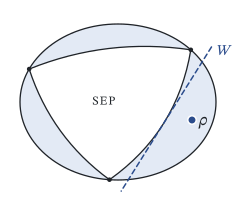

How can entanglement be recognized in systems of many particles?

Entanglement is the most distinctive feature of quantum theory, but in large systems it is hard to characterize and harder still to observe, because single particles often cannot be addressed individually and only a few collective quantities can be measured. I develop criteria that certify and quantify entanglement, including how many particles share it and in how many dimensions, from data that experiments can actually access: collective spin moments, covariance matrices, randomized measurements. Behind these criteria lies the geometry of the set of quantum states, which I also study for its own sake.
Key papers